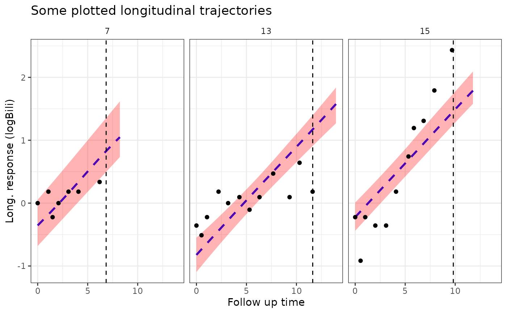

Plot the estimated subject-specific or marginal longitudinal trajectory
Source:R/posterior_traj.R
plot.predict.stanjm.RdThis generic plot method for predict.stanjm objects will
plot the estimated subject-specific or marginal longitudinal trajectory
using the data frame returned by a call to posterior_traj.
To ensure that enough data points are available to plot the longitudinal
trajectory, it is assumed that the call to posterior_traj
would have used the default interpolate = TRUE, and perhaps also
extrapolate = TRUE (the latter being optional, depending on
whether or not the user wants to see extrapolation of the longitudinal
trajectory beyond the last observation time).
Arguments
- x
A data frame and object of class
predict.stanjmreturned by a call to the functionposterior_traj. The object contains point estimates and uncertainty interval limits for the fitted values of the longitudinal response.- ids
An optional vector providing a subset of subject IDs for whom the predicted curves should be plotted.
- limits
A quoted character string specifying the type of limits to include in the plot. Can be one of:
"ci"for the Bayesian posterior uncertainty interval for the estimated mean longitudinal response (often known as a credible interval);"pi"for the prediction interval for the estimated (raw) longitudinal response; or"none"for no interval limits.- xlab, ylab
An optional axis label passed to
labs.- vline
A logical. If
TRUEthen a vertical dashed line is added to the plot indicating the event or censoring time for the individual. Can only be used if each plot within the figure is for a single individual.- plot_observed
A logical. If
TRUEthen the observed longitudinal measurements are overlaid on the plot.- facet_scales
A character string passed to the
scalesargument offacet_wrapwhen plotting the longitudinal trajectory for more than one individual.- ci_geom_args
Optional arguments passed to
geom_ribbonand used to control features of the plotted interval limits. They should be supplied as a named list.- grp_overlay
Only relevant if the model had lower level units clustered within an individual. If
TRUE, then the fitted trajectories for the lower level units will be overlaid in the same plot region (that is, all lower level units for a single individual will be shown within a single facet). IfFALSE, then the fitted trajectories for each lower level unit will be shown in a separate facet.- ...
Optional arguments passed to
geom_smoothand used to control features of the plotted longitudinal trajectory.
Value
A ggplot object, also of class plot.predict.stanjm.
This object can be further customised using the ggplot2 package.
It can also be passed to the function plot_stack_jm.
Examples
if (.Platform$OS.type != "windows" || .Platform$r_arch != "i386") {
# \donttest{
# Run example model if not already loaded
if (!exists("example_jm")) example(example_jm)
# For a subset of individuals in the estimation dataset we will
# obtain subject-specific predictions for the longitudinal submodel
# at evenly spaced times between 0 and their event or censoring time.
pt1 <- posterior_traj(example_jm, ids = c(7,13,15), interpolate = TRUE)
plot(pt1) # credible interval for mean response
plot(pt1, limits = "pi") # prediction interval for raw response
plot(pt1, limits = "none") # no uncertainty interval
# We can also extrapolate the longitudinal trajectories.
pt2 <- posterior_traj(example_jm, ids = c(7,13,15), interpolate = TRUE,
extrapolate = TRUE)
plot(pt2)
plot(pt2, vline = TRUE) # add line indicating event or censoring time
plot(pt2, vline = TRUE, plot_observed = TRUE) # overlay observed longitudinal data
# We can change or add attributes to the plot
plot1 <- plot(pt2, ids = c(7,13,15), xlab = "Follow up time",
vline = TRUE, plot_observed = TRUE,
facet_scales = "fixed", color = "blue", linetype = 2,
ci_geom_args = list(fill = "red"))
plot1
# Since the returned plot is also a ggplot object, we can
# modify some of its attributes after it has been returned
plot1 +
ggplot2::theme(strip.background = ggplot2::element_blank()) +
ggplot2::labs(title = "Some plotted longitudinal trajectories")
# }
}
#>
#> exmpl_> # set.seed(123)
#> exmpl_> if (.Platform$OS.type != "windows" || .Platform$r_arch !="i386")
#> exmpl_+ example_jm <-
#> exmpl_+ stan_jm(formulaLong = logBili ~ year + (1 | id),
#> exmpl_+ dataLong = pbcLong[1:101,],
#> exmpl_+ formulaEvent = survival::Surv(futimeYears, death) ~ sex + trt,
#> exmpl_+ dataEvent = pbcSurv[1:15,],
#> exmpl_+ time_var = "year",
#> exmpl_+ # this next line is only to keep the example small in size!
#> exmpl_+ chains = 1, seed = 12345, iter = 100, refresh = 0)
#> Fitting a univariate joint model.
#>
#> Please note the warmup may be much slower than later iterations!
#> Warning: The largest R-hat is 1.07, indicating chains have not mixed.
#> Running the chains for more iterations may help. See
#> https://mc-stan.org/misc/warnings.html#r-hat
#> Warning: Bulk Effective Samples Size (ESS) is too low, indicating posterior means and medians may be unreliable.
#> Running the chains for more iterations may help. See
#> https://mc-stan.org/misc/warnings.html#bulk-ess
#> Warning: Tail Effective Samples Size (ESS) is too low, indicating posterior variances and tail quantiles may be unreliable.
#> Running the chains for more iterations may help. See
#> https://mc-stan.org/misc/warnings.html#tail-ess
#> Warning: `aes_string()` was deprecated in ggplot2 3.0.0.
#> ℹ Please use tidy evaluation idioms with `aes()`.
#> ℹ See also `vignette("ggplot2-in-packages")` for more information.
#> ℹ The deprecated feature was likely used in the rstanarm package.
#> Please report the issue at <https://github.com/stan-dev/rstanarm/issues>.
#> `geom_smooth()` using formula = 'y ~ x'
#> `geom_smooth()` using formula = 'y ~ x'
#> `geom_smooth()` using formula = 'y ~ x'
#> `geom_smooth()` using formula = 'y ~ x'
#> `geom_smooth()` using formula = 'y ~ x'
#> `geom_smooth()` using formula = 'y ~ x'
#> `geom_smooth()` using formula = 'y ~ x'
#> `geom_smooth()` using formula = 'y ~ x'
#> `geom_smooth()` using formula = 'y ~ x'
#> `geom_smooth()` using formula = 'y ~ x'
#> `geom_smooth()` using formula = 'y ~ x'
#> `geom_smooth()` using formula = 'y ~ x'
#> `geom_smooth()` using formula = 'y ~ x'
